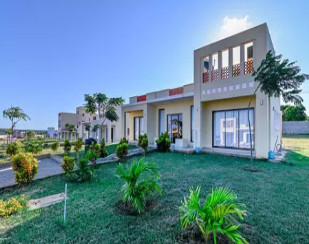
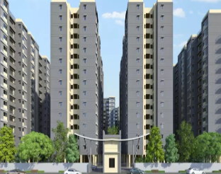
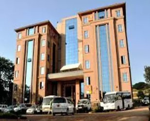
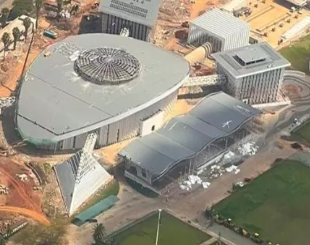
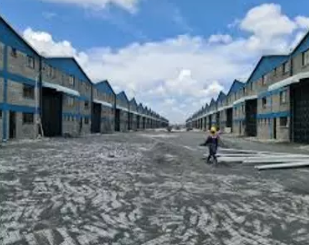

Our Projects
Delivering construction solutions for complex challenges

Infrastructure
GTC Tower

Industrial
Orbit Place

Infrastructure
Business Bay mall east Africa

Commercial
Pazuri At vipingo Holiday HomesM

Industrial
Bavarian Auto Works

Infrastructure
Fraser River Crossing

Commercial
Manhattan Financial Center

Industrial
Bavarian Auto Works

Infrastructure